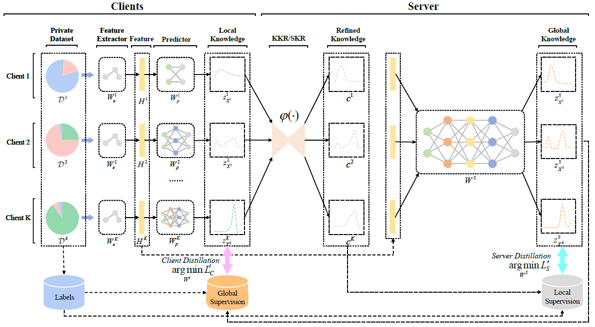

Zhiyuan Wu（吴致远）

|
|


"Stay Hungry, Stay Foolish."
About Me
I'm currently a master’s candidate and a research assistant with Institute of Computing Technology, Chinese Academy of Sciences (ICT, CAS). Before that, I was an research intern at Institute of Software Systems and Engineering, Tsinghua University (THU), from Feb. 2021 to Jun. 2021, and at the Key Laboratory of Symbolic Computation and Knowledge Engineering of Ministry of Education, Jilin University (JLU), from Jun. 2020 to Oct. 2021.My research interests include multi-access edge computing, artificial intelligence of things, federated learning, and knowledge distillation. I have published several technical papers and led or participated in a number of scientific research projects. I have honored 20+ all kinds of awards since my bachelor's, including the rank of 1/1085 in the advanced level of the PAT Program Ability Test (<0.1%), the national first prize in the National Computer Proficiency Challenge for Undergraduates (<2%), and the National Excellent Completion in the Innovation Training Project for Undergraduates which I presided over (<1.4%). I am a Member of the China Computer Federation (CCF).
Research Interests
I'm really interested in Knowledge Distillation which I work on since I was an undergraduate, and I am currently committed to carrying out research about it at the intersection of Federated Learning and Edge Intelligence, and the latter two are the research interests of my supervisor and his team.In brief, My research interests include some key technologies related to Edge Intelligence and Machine Learning:
-
Multi-access Edge Computing (MEC) is an ETSI-defined network architecture concept that enables cloud computing capabilities and an IT service environment at the edge of the cellular network. MEC technology is designed to be implemented at the cellular base stations or other edge nodes, and enables flexible and rapid deployment of new applications and services for customers.
-
Artificial Intelligence of Things (AIoT) is the combination of Artificial intelligence (AI) technologies with the Internet of things (IoT) infrastructure to achieve more efficient IoT operations, improve human-machine interactions and enhance data management and analytics.
-
Federated Learning (FL) is a distributed machine learning (DML) paradigm that trains an algorithm across multiple decentralized edge devices holding local data samples, without exchanging them. This approach stands in contrast to traditional centralized machine learning techniques where all the local datasets are uploaded to one server, as well as to more classical decentralized approaches which often assume that local data samples are identically distributed.
-
Knowledge Distillation (KD) is a machine learning (ML) technique that transfers the knowledge from one ML model to another, enabling heterogeneous ML models learn from each other to realize constructively optimization.
News!!!
-
2022.06: Received the Bachelor Degree from the College of Computer Science and Technology, Jilin University, Changchun, China, through the Tang Aoqing Honors Program.
-
2022.04: First Author Paper "Exploring the Distributed Knowledge Congruence in Proxy-data-free Federated Distillation" is Preprint on arXiv:2204.07028.
-
2022.02: Becoming a Student Member of Institute of Electrical and Electronics Engineers (IEEE).
-
2022.01: Promoted to Member of China Computer Federation (CCF).
-
2021.12: Join in the Mobile Internet Research Group of Institute of Computing Technology, Chinese Academy of Sciences as a Research Assistant.
-
2021.09: Pre-admitted by Institute of Computing Technology, Chinese Academy of Sciences as a Master Candidate. 2021.09: Pre-admitted by Institute of Computing Technology, Chinese Academy of Sciences as a Master Candidate.
Education
-
2022.08-Present: Master in Electronic Information with Institute of Computing Technology, Chinese Academy of Sciences, Beijing, China (No. 1 Institute in CS, CAS; UCAS ESI Ranking 41, A+)
-
2018.09-2022.06: Bachelor in the Tang Aoqing Honors Program (Major in Computer Science) with the College of Computer Science and Technology, Jilin University, Changchun, China (JLU ESI Ranking 219, A-)
Selected Awards
-
PAT Program Ability Test (Advanced Level) (Rank 1/1085, <0.1%)
-
2020-2022 Consecutively Obtain the Scholarship of Tang Aoqing Honors Program of Research and Practice
(The Only One in the whole College, 1/568, <0.2%)
-
Project Leader of Innovation Training Project for Undergraduates, National Excellent Completion
(The First Group in the whole College, 1/72, <1.4%)
-
One of the First Inductees of the Plan for Cultivating Top-notch Students of Basic Disciplines, China (<1.7%)
-
National Computer Proficiency Challenge for Undergraduates (Programming Competition), National First Prize (<2%)
-
20+ Other Awards such as the Scholarship of Intelligent Substrate Co-education of Jilin University (<1.5%), the Academic Scholarship (<2%), the Meritorious Winner in the Interdisciplinary Contest in Modeling (<7%), etc.
Selected Publications
Representative Publications
|  |
Exploring the Distributed Knowledge Congruence in Proxy-data-free Federated Distillation. Zhiyuan Wu, et al. Preprint. The First Work to Consider Knowledge Incongruence Among Heterogeneous Clients in Proxy-data-free Federated Distillation. Propose a communication-efficient and accuracy guaranteed FD algorithm, FedDKC, with knowledge refinement strategies KKR and SKR. With our method, knowledge discrepancy between arbitrating clients satisfies an acceptable upper bound is theoretically proved. Work closely related to model-heterogeneous federated learning and knowledge distillation. |
Selected Publication List
-
Exploring the Distributed Knowledge Congruence in Proxy-data-free Federated Distillation.
Zhiyuan Wu, Sheng Sun, Yuwei Wang*, Min Liu, and Qingxiang Liu.
IEEE Journal on Selected Areas in Communications. 2023. (No.1 Journal in Computer Networks and Communications; CORE-A*, CCF-A, TOP, Under Review)
-
Spirit Distillation: A Model Compression Method with Multi-domain Knowledge Transfer.
Zhiyuan Wu, Yu Jiang, Minghao Zhao, Chupeng Cui, Zongmin Yang, Xinhui Xue, and Hong Qi*.
International Conference on Knowledge Science, Engineering and Management. 2021. (CORE-B, CCF-C)
-
Activation Map Adaptation Model for Knowledge Distillation.
Zhiyuan Wu, Hong Qi, Yu Jiang*, Chupeng Cui, Zongmin Yang, Xinhui Xue.
Journal of Jilin University (Science Edition). 2022. (Chinese Core Journal, in Chinese, Accepted)
-
Spirit Distillation: Precise Real-time Semantic Segmentation of Road Scenes with Insufficient Data.
Zhiyuan Wu, Yu Jiang, Chupeng Cui, Zongmin Yang, Xinhui Xue, and Hong Qi*.
arXiv preprint arXiv:2103.13733, 2021.
Selected Activities
Visiting, Internship & Exchange
-
2021.12-Present: Research Assistant in Institute of Computing Technology, Chinese Academy of Sciences, Beijing, China
(No. 1 Institute in CS, CAS; UCAS ESI Ranking 41, A+)
-
2021.10-2021.12: Research Intern in Institute of Computing Technology, Chinese Academy of Sciences, Beijing, China
(No. 1 Institute in CS, CAS; UCAS ESI Ranking 41, A+, Online Internship)
-
2021.07-2021.07: Graduate of the Summer School for Master Students, National University of Defense Technology, Changsha, China (NUDT, A+)
-
2021.02-2021.06: Research Intern in Institute of Software Systems and Engineering, Tsinghua University, Beijing, China (THU ESI Ranking 51, A+, Online Internship)
-
2020.06-2021.10: Research Intern in the Key Laboratory of Symbolic Computation and Knowledge Engineering of Ministry of Education, Jilin University, Changchun, China (JLU ESI Ranking 219, A-)
Social Service
-
2022.02-Present: Student Member of Institute of Electrical and Electronics Engineers (IEEE)
-
2022.01-Present: Member of China Computer Federation (CCF)
-
2019.09-2021.12: Student Member of China Computer Federation (CCF)
Conference Participation
-
2022.05-2022.05: Conference on Application of Privacy Computing Technology in Inclusive Financial Engineering (ICT and HXB), Nanjing, China (Online Conference)
-
2022.05-2022.05: Conference on Federated Learning Key Technologies for Edge-side Lightweighting (ICT and CMCC), Beijing, China (Online Conference)
-
2021.08-2021.08: The 14th International Conference on Knowledge Science, Engineering and Management (KSEM2021), Tokyo, Japan (Online Conference)
-
2019.12-2019.12: The 4th Academic Exchange Forum of Top Students in Basic Subjects, Changchun, China
-
2019.10-2019.10: The 16th China National Computer Conference (CNCC2019), Soochow, China
Academic Report
-
2021.11: Federated Learning.
On the 1st Undergraduate Academic Exchange Conference of Jilin University (UAEJLU2021)
-
2021.08: Spirit Distillation: A Model Compression Method with Multi-domain Knowledge Transfer.
On the 14th International Conference on Knowledge Science, Engineering and Management (KSEM2021)
Selected Projects
Representative Projects
 |
MindSpore Network Model and Federated Innovation Collaboration. Huawei Technologies Co. Ltd. MindSpore is an open AI framework supported by Huawei Technologies Co. Ltd. that matches with Ascend processors and supports multi-processor architectures. Before Aug. 2022, MindSpore has gained more than 3k stars on github, and is awarded the World's 3rd Most Popular Federated Learning Framework, only inferior to PySyft and FATE. I was involved in integrating the server communication module with the asynchronous federated learning and client selection functional modules in the framework. |
Selected Project List
-
2021.09-Present: Research on Vertical Federated Learning Mechanism for Recommendation Systems
(Innovation and Practice Training Project for Undergraduates, Chinese Academy of Sciences, 15,000 RMB, Project Leader)
-
2022.06-2022.06: Credit Risk Assessment Business for Banks based on Vertical Federated Learning
(Huaxia Bank Co. Ltd.)
-
2022.05-2022.06: Federated Learning-based ****** at the Edge of Cloud Networks
(Innovation Project of Institute of Computing Technology, Chinese Academy of Sciences, in the Application)
-
2022.04-2022.05: Federated Learning Key Technologies for Edge-side Light-weighting (China Mobile Communications Group Co. Ltd.)
-
2022.04-2022.04: Research on Lightweight Federated Learning Mechanisms for ****** (National Natural Science Foundation of China, in the Application)
-
2022.04-2022.04: Research and Validation of Key Technologies for ****** Federated Learning (Key Projects of National Natural Science Foundation of China, in the Application)
-
2022.03-2022.03: Application of Federated Learning to Mobile Banking Transactions in Anti-fraud Scenarios (Huaxia Bank Co. Ltd.)
-
2021.11-2022.01: MindSpore Network Model and Federated Innovation Collaboration (Huawei Technologies Co. Ltd.)
-
2020.06-2021.12: Research on Semantic Segmentation based on Activation Map Matching Knowledge Distillation (Innovation Training Project for Undergraduates, Jilin University, 10,000 RMB, Project Leader)
-
2021.10-2021.10: Privacy Computing and Federated Learning (China Mobile Communications Group Co. Ltd.)
-
2021.02-2021.06: Research on High-frame-rate Camera based on Fusion Sensors such as Dynamic Vision Sensors
(Internship Project in Tsinghua University)
-
2021.01-2021.10: Automatic Design Theory for Intelligent Vehicle Iterability Active Reasoning (National Natural Science Foundation of China under Grant U20A20285)
-
2021.01-2021.06: Research on the Key Technology of Underwater Autonomous Vehicle Visual Cognitive Computing based on Active Reasoning (National Natural Science Foundation of China under Grant 62072211)